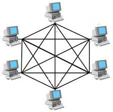
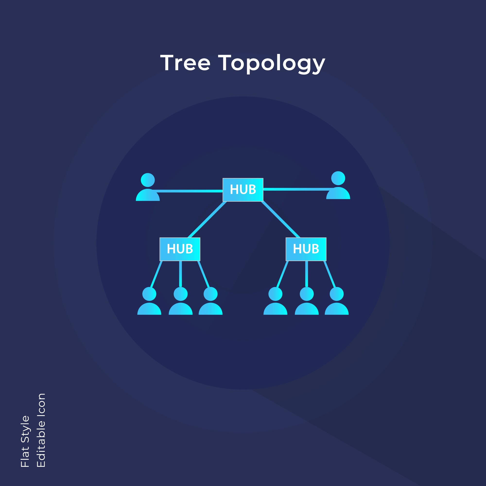
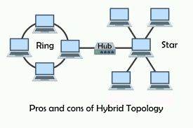

Network Topology Notes
Network topology is the arrangement of a network's various elements, such as nodes (devices) and links (connections). It can be described in two ways: physical and logical.
Physical and Logical Topologies
Physical Topology 🗺️: This refers to the actual, physical layout of the network's components, including the devices, cables, and their locations. It's how the network is wired and arranged in the real world.
Logical Topology 🧠: This describes how data flows through the network, regardless of the physical connections. It's concerned with the path a data packet takes from one device to another. For example, in a network that is physically set up as a star, data might still flow in a logical ring pattern.
1. Bus Topology 🚌
In a bus topology, all devices are connected to a single central cable, or "backbone." Data is transmitted down this cable and is received by all devices, but only the intended recipient processes the data.

2. Star Topology 🌟
The most common modern topology, the star topology connects all devices to a central hub, switch, or router. Each device has a dedicated, point-to-point connection to the central device.
Licensed by Google

3. Ring Topology 💍
In a ring topology, each device connects to exactly two other devices, forming a circular ring. Data travels in a single direction around the ring, and each device acts as a repeater, boosting the signal before passing it on.
Licensed by Google

4. Mesh Topology 🕸️
A mesh topology is a network where every device is connected to every other device. This creates multiple paths for data, providing high redundancy and reliability.

5. Tree Topology 🌳
A tree topology combines elements of a bus and star topology. It has a central "root" bus cable from which multiple star-configured networks (branches) extend.
Licensed by Google

6. Hybrid Topology 🔀
A hybrid topology is a combination of two or more different topologies. For example, a star-ring hybrid connects multiple star networks using a ring backbone.
